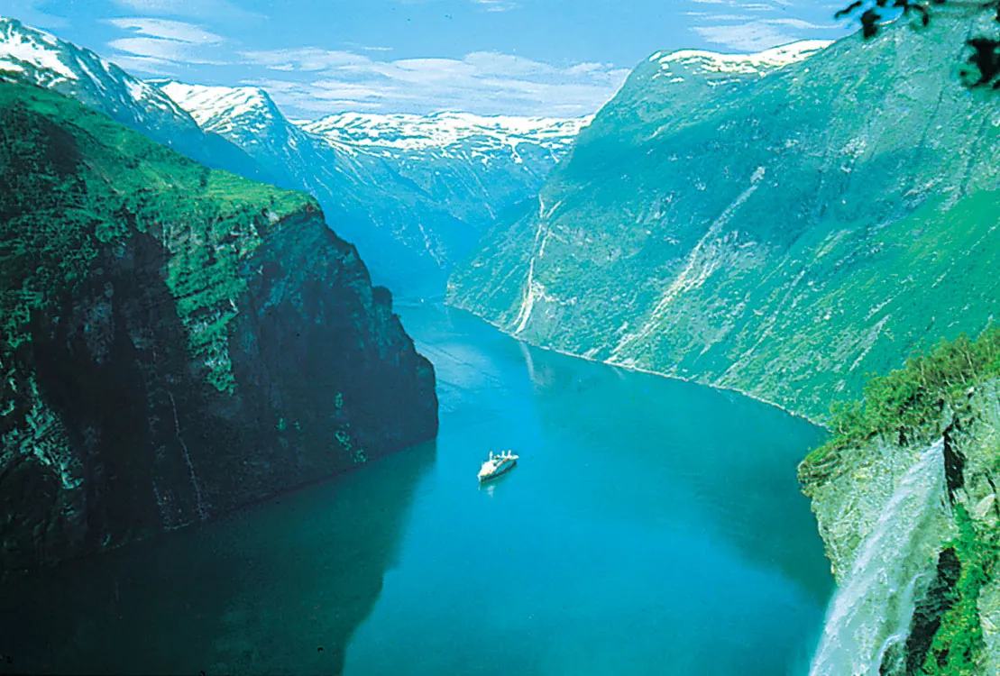
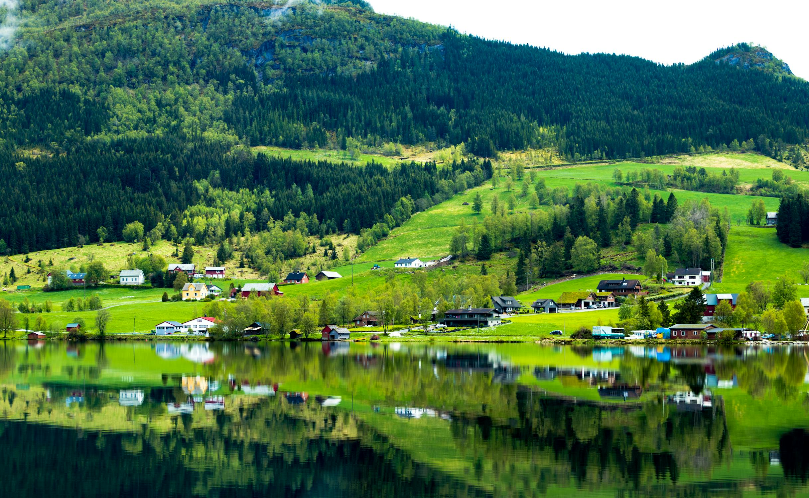
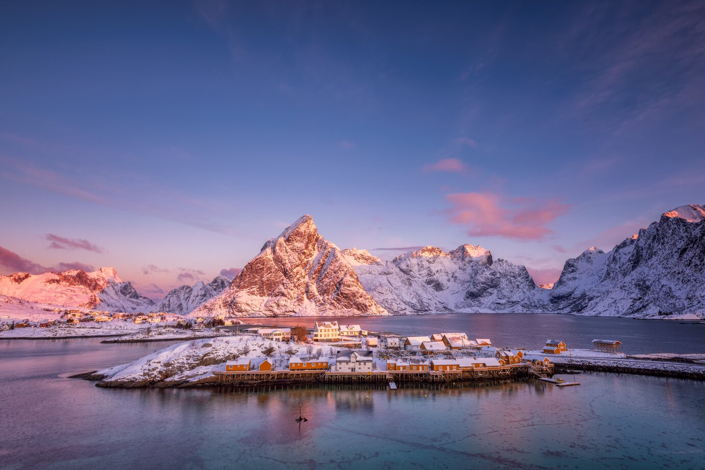
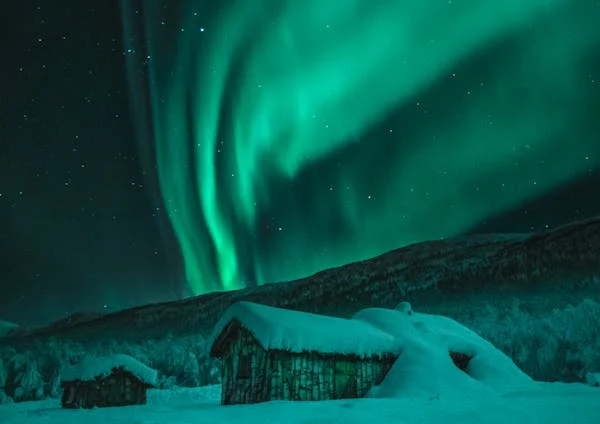
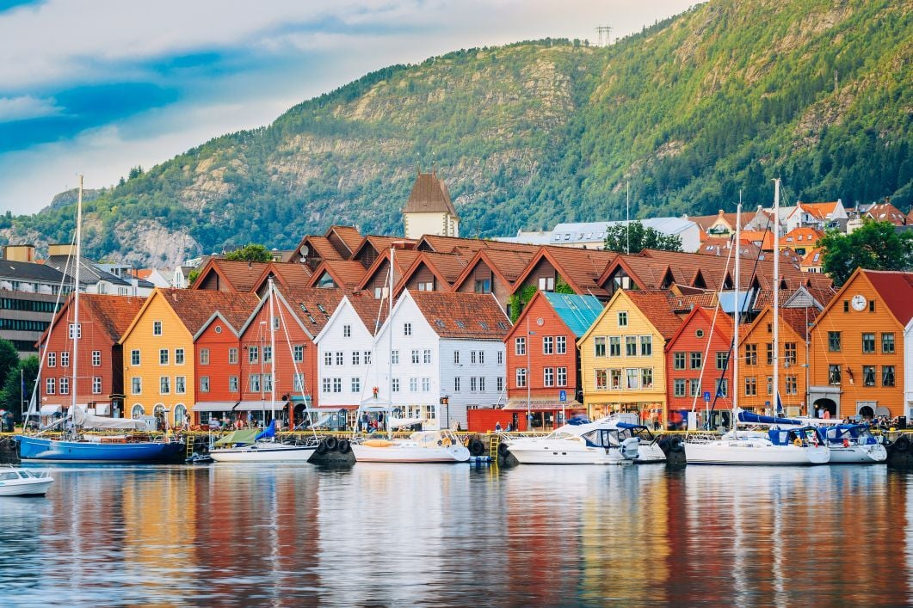
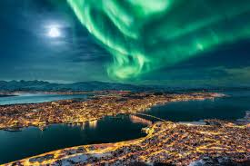
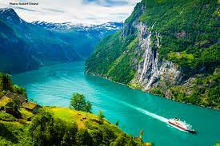
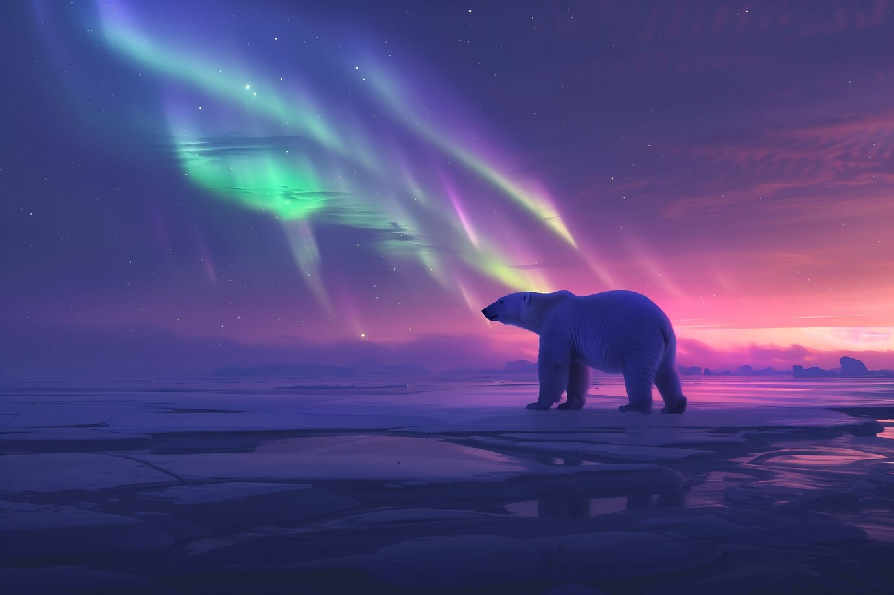
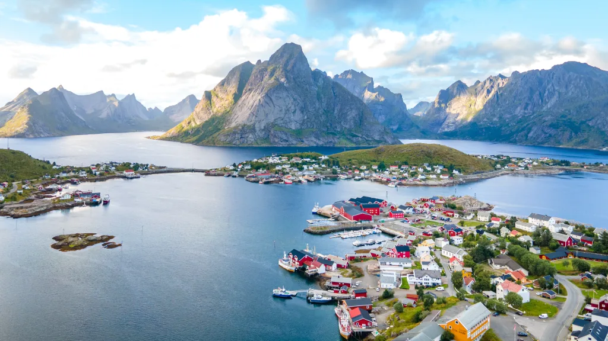
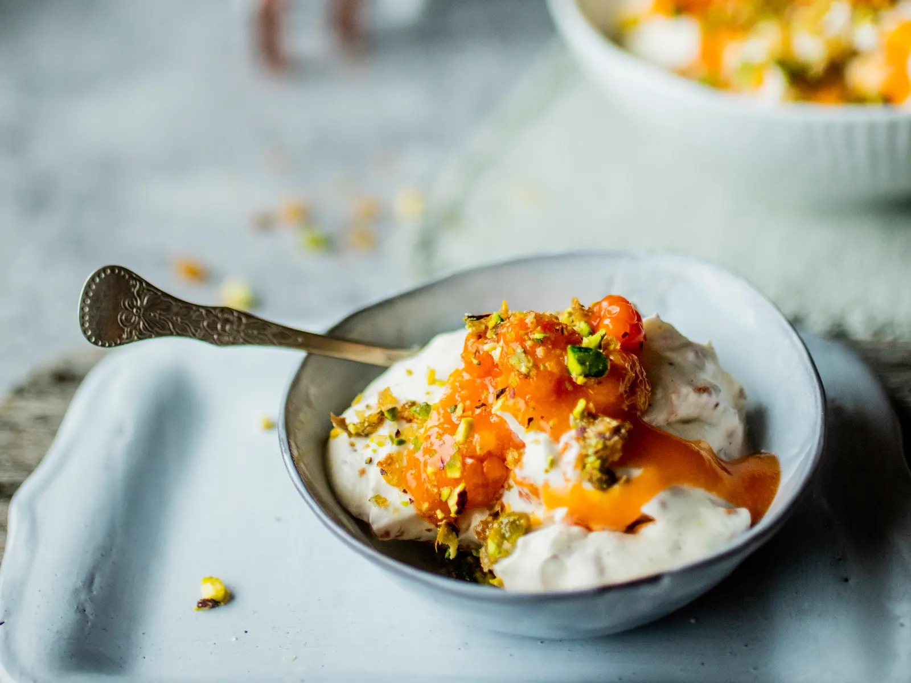

Norway is a stunning Scandinavian country known for its majestic fjords, towering mountains, and the mesmerizing Northern Lights! With charming cities like Oslo and Bergen , it blends modern culture with rich Viking history. Its breathtaking landscapes, from dramatic cliffs to crystal-clear lakes, offer endless adventures. Whether you're cruising through Geirangerfjord or hiking to Trolltunga, Norway is a land of unforgettable beauty!
Witness the magic of the Aurora Borealis!

General Information
Continent
Europe
Capital
Oslo
Language
Norwegian
Population
5.5 million
Visa
Schengen Visa: Norway is part of the Schengen Zone.
TimeZone
Central European Time (CET, UTC+1)
Currency
Norwegian Krone (NOK)
Famous for
Northern Lights (Aurora Borealis),Midnight Sun, Vikings & Winter Sports
Travel Means
By Air, Rail, Road and Seaways (ferry)
Months to visit
June -August $ December - February
About
Norway, a breathtaking Scandinavian country, is renowned for its dramatic landscapes, rich history, and vibrant culture. Stretching from the North sea to the Arctic Circle, it boasts deepfjords, towering mountains, and picturesque coastal villages. The capital,Oslo, is a dynamic city blending modern architecture, Viking heritage, and world-class museums.Bergen, with its colorful wooden houses and historic Hanseatic Wharf, serves as the gateway to the iconic fjords. Other major cities like Trondheim and Stavanger offer a mix of historical charm and contemporary life. Norway is also a global leader in sustainability, with a strong focus on green energy, environmental conservation, and a high quality of life.
Beyond its cities, Norway offers thrilling outdoor experiences and natural wonders. Adventure seekers can hike to iconic spots likeTrolltunga, Preikestolen(Pulpit Rock), and Kjeragbolten, while Arctic destinations like Tromsø and Svalbard provide opportunities to witness the Northern Lights , go dog sledding, or explore frozen landscapes. In summer, the Midnight Sun keeps the country bathed in daylight, making it perfect for road trips, kayaking, and wildlife spotting. Whether it's exploring Viking history, enjoying world-class skiing, or cruising through UNESCO-listed fjords, Norway is a destination that offers unforgettable experiences in every season.




Popular destinations

Bergen
Gateway to the Fjords, with Colorful wooden houses & fjords. Has UNESCO-listed old Hanseatic trading port. Best for Seafood and amazing views.

Tromsø
Best for Northern Lights, Fjords & Mountains . Also has Arctic Adventures – Dog Sledding, Snowmobiling, and Whale Watching

Geirangerfjord
Norway’s Most Beautiful Fjord – UNESCO Site. Recognized for its breathtaking landscapes and deep blue waters surrounded by towering cliffs

Svalbard
Extreme Arctic Adventures. An Arctic archipelago between Norway and the North Pole, home to Polar Bears and best for viewing Midnight Sun and Northern Lights.
Major Celebrations & Cultural Festivities
1.Constitution Day
📅17th May
🎭 Norway’s biggest national celebration
Norway’s Constitution Day, celebrated every year on May 17th, is the country's most important national holiday! It marks the signing of Norway’s constitution in 1814, which declared the nation’s independence from Denmark. Unlike many national days that focus on military parades, Syttende Mai is a joyful, family-friendly celebration filled with music, flags, and traditional clothing.
2.Northern Lights Festival
📅January/February
🎆A winter festival featuring classical, jazz, and folk music under the Aurora Borealis
The Northern Lights Festival (Nordlysfestivalen) is a magical winter event held in Tromsø, one of the best places in the world to see the Aurora Borealis! This festival combines music, culture, and Arctic winter charm, making it a must-visit for those seeking a unique experience under the dancing northern lights.
3.Røros Christmas Market
📅December
🎆A magical Christmas market in a UNESCO-listed town, with traditional crafts and reindeer rides.
One of Norway’s most authentic & cozy Christmas markets. The Røros Christmas Market is one of Norway’s most magical holiday experiences! Held in the UNESCO-listed town of Røros, known for its well-preserved wooden houses and charming streets, this market feels like stepping into a real-life Christmas fairytale.
Important Landmarks


Popular Food and Cuisines
1.Multekrem (Cloudberry Cream)
A dessert made with Arctic cloudberries and whipped cream, often served during Christmas.
MoussaMultekrem is a traditional Norwegian dessert made from cloudberries (multebær)
and whipped cream, often served during Christmas and special occasions. This simple
yet delicious treat highlights the unique flavor of Arctic cloudberries, which are golden
-orange berries with a sweet, slightly tart taste.

.jpg)
2. Fårikål (Lamb & Cabbage Stew)
Norway’s national dish – slow-cooked lamb with cabbage,
black pepper, and potatoes. Traditionally eaten in autumn.
It's a beloved comfort food with deep roots in Norwegian culinary
heritage. Fårikål means "lamb in cabbage", and the dish is slow
-cooked to create a rich, flavorful broth.
3. Smultringer (Norwegian Doughnuts)
Fried, ring-shaped doughnuts spiced with cardamom – a holiday favorite!
Unlike American doughnuts, smultringer don’t have yeast, making them
denser but still soft and delicious. They are especially popular during Chri
-stmas and winter celebrations!
.jpg)
Best Time to Visit for Different Activities
For Northern Lights : December – March
For Hiking & Fjords : June – August
For Midnight Sun: December – March
For Skiing & Winter Sports: July – August
Adventure awaits! Explore breathtaking destinations, uncover hidden gems, and embrace the beauty
of the world—one journey at a time. Stay inspired, keep wandering!
Copyright © 2025 Around The Atlas.
All rights reserved. Use of this website indicates your compliance with our Privacy Policy, Conditions of Carriage, Terms and Conditions.